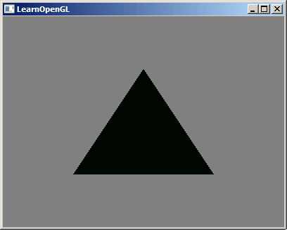
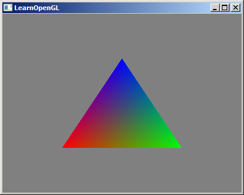

着色器
在前面的章节中已经看到过着色器的代码，但是我们几乎没做任何的介绍。着色器是运行在GPU上的小程序。这些小程序为图形渲染管线的某个特定部分而运行。从基本意义上来说，着色器只是一种把输入转化为输出的程序。着色器也是一种非常独立的程序，因为它们之间不能相互通信，它们之间唯一的沟通只有通过输入和输出。
GLSL
GLSL（OpenGL Shader Language）是一种类C语言。一个着色器的代码结构大致如下：
#version version_number
in type in_variable_name;
in type in_variable_name;
out type out_variable_name;
uniform type uniform_name;
int main()
{
// 处理输入并进行一些图形操作
// ...
// 输出处理过的结果到输出变量
out_variable_name = weird_stuff_we_processed;
}
和类C语言一样main是程序的入口，而一个变量的声明方式为type variable_name，但是你看到前面好像还多了一个关键字。它的作用是什么？
- in - 表示此变量来自于之前的步骤。
- out - 表示导出此变量给之后的步骤使用。
- uniform - 表示此变量的值来之CPU，通过外部代码赋值。也就是通过我们.Net的代码给他赋值。
上面已经提到过，每个着色器是独立的，它们之间唯一的沟通只有通过输入和输出。也就是通过in和out在不同的着色器中传值，in和out负责着色器之间的交互，而uniform负责CPU和GPU之间的交互。我们已经知道着色器是运行在GPU之上的，但是可能有些数据需要通过.Net代码传递给着色器。
当然在前面的代码中我们还看到过这样的代码layout (location = 0) in vec3 dotPos，通常出现在顶点着色器中，因为顶点着色器是图形渲染管线中的第一个着色器，而它的数据往往来自顶点属性，也就是VAO中的attribute pointer。
回顾之前的着色器代码。
// [vertex shader] #version 330 core layout (location = 0) in vec3 dotPos; void main(){ gl_Position = vec4(dotPos, 1.0); } // [fragment shader] #version 330 core out vec4 fragColor; void main(){ fragColor = vec4(1.0, 0.5, 0.2, 1.0); }
可以看到在顶点着色器中出现了一个gl_Position变量，它并没有被声明。是的它是GLSL的内置变量，我们可以直接使用。GLSL还有很多其他内置变量gl_FragColorgl_PointSize等。它们都有着特殊的用途。
而我们在顶点着色器中必须使用gl_Position作为结果输出，因为在之后的图元装配中会使用这个变量。
好累。。。不想写了。。。接下来直接抄袭吧。
数据类型
和其他编程语言一样，GLSL有数据类型可以来指定变量的种类。GLSL中包含C等其它语言大部分的默认基础数据类型：intfloatdoubleuintbool。GLSL也有两种容器类型，它们会在这个教程中使用很多，分别是向量(Vector)和矩阵(Matrix)，其中矩阵我们会在之后的教程里再讨论。
GLSL中的向量是一个可以包含有2、3或者4个分量的容器，分量的类型可以是前面默认基础类型的任意一个。它们可以是下面的形式（n代表分量的数量）：
| 类型 | 说明 |
|---|---|
| vecn | 包含n个float分量的默认向量 |
| bvecn | 包含n个bool分量的向量 |
| ivecn | 包含n个int分量的向量 |
| uvecn | 包含n个uint分量的向量 |
| dvecn | 包含n个double分量的向量 |
大多数时候我们使用vecn，因为float足够满足大多数要求了。
一个向量的分量可以通过vec.x这种方式获取，这里x是指这个向量的第一个分量。你可以分别使用.x.y.z和.w来获取它们的第1、2、3、4个分量。GLSL也允许你对颜色使用rgba，或是对纹理坐标使用stpq访问相同的分量。
向量这一数据类型也允许一些有趣而灵活的分量选择方式，叫做重组(Swizzling)。重组允许这样的语法：
vec2 someVec;
vec4 differentVec = someVec.xyxx;
vec3 anotherVec = differentVec.zyw;
vec4 otherVec = someVec.xxxx + anotherVec.yxzy;
可以使用上面4个字母任意组合来创建一个和原来向量一样长的（同类型）新向量，只要原来向量有那些分量即可；然而，你不允许在一个vec2向量中去获取.z元素。我们也可以把一个向量作为一个参数传给不同的向量构造函数，以减少需求参数的数量：
vec2 vect = vec2(0.5, 0.7);
vec4 result = vec4(vect, 0.0, 0.0);
vec4 otherResult = vec4(result.xyz, 1.0);
向量是一种灵活的数据类型，我们可以把它用在各种输入和输出上。学完教程你会看到很多新颖的管理向量的例子。
输入与输出
虽然着色器是各自独立的小程序，但是它们都是一个整体的一部分，出于这样的原因，我们希望每个着色器都有输入和输出，这样才能进行数据交流和传递。GLSL定义了in和out关键字专门来实现这个目的。每个着色器使用这两个关键字设定输入和输出，只要一个输出变量与下一个着色器阶段的输入匹配，它就会传递下去。但在顶点和片段着色器中会有点不同。
顶点着色器应该接收的是一种特殊形式的输入，否则就会效率低下。顶点着色器的输入特殊在，它从顶点数据中直接接收输入。为了定义顶点数据该如何管理，我们使用location这一元数据指定输入变量，这样我们才可以在CPU上配置顶点属性。我们已经在前面的教程看过这个了layout (location = 0)。顶点着色器需要为它的输入提供一个额外的layout标识，这样我们才能把它链接到顶点数据。
你也可以忽略layout (location = 0)标识符，通过在OpenGL代码中使用glGetAttribLocation查询属性位置值(Location)，但是我们更喜欢在着色器中设置它们，这样会更容易理解而且节省你（和OpenGL）的工作量。
另一个例外是片段着色器，它需要一个vec4颜色输出变量，因为片段着色器需要生成一个最终输出的颜色。如果你在片段着色器没有定义输出颜色，OpenGL会把你的物体渲染为黑色（或白色）。
所以，如果我们打算从一个着色器向另一个着色器发送数据，我们必须在发送方着色器中声明一个输出，在接收方着色器中声明一个类似的输入。当类型和名字都一样的时候，OpenGL就会把两个变量链接到一起，它们之间就能发送数据了（这是在链接程序对象时完成的）。为了展示这是如何工作的，我们会稍微改动一下之前教程里的那个着色器，让顶点着色器为片段着色器决定颜色。
顶点着色器
#version 330 core
layout (location = 0) in vec3 aPos; // 位置变量的属性位置值为0
out vec4 vertexColor; // 为片段着色器指定一个颜色输出
void main()
{
gl_Position = vec4(aPos, 1.0); // 注意我们如何把一个vec3作为vec4的构造器的参数
vertexColor = vec4(0.5, 0.0, 0.0, 1.0); // 把输出变量设置为暗红色
}
片段着色器
#version 330 core
out vec4 FragColor;
in vec4 vertexColor; // 从顶点着色器传来的输入变量（名称相同、类型相同）
void main()
{
FragColor = vertexColor;
}
你可以看到我们在顶点着色器中声明了一个vertexColor变量作为vec4输出，并在片段着色器中声明了一个类似的vertexColor。由于它们名字相同且类型相同，片段着色器中的vertexColor就和顶点着色器中的vertexColor链接了。由于我们在顶点着色器中将颜色设置为深红色，最终的片段也是深红色的。下面的图片展示了输出结果：
好了。。抄袭完了。。继续写吧。
uniform
前面的代码我们都是通过在着色器中编码指定的颜色，当然问题也是显而易见的，当我们想换一个颜色的时候就必须得去修改着色器代码并且重新编译着色器。这显然是很不明智的。这个时候我们就需要使用uniform了，uniform允许我们从外部对着色器中的变量赋值。
Uniform是一种从CPU中的应用向GPU中的着色器发送数据的方式，但uniform和顶点属性有些不同。首先，uniform是全局的(Global)。全局意味着uniform变量必须在每个着色器程序对象中都是独一无二的，而且它可以被着色器程序的任意着色器在任意阶段访问。第二，无论你把uniform值设置成什么，uniform会一直保存它们的数据，直到它们被重置或更新。
我们用之前的你好 三角形的案例进行修改，先把片段着色器的代码换成下面的。
#version 330 core
out vec4 FragColor;
uniform vec4 ourColor; // 在.Net代码中设定这个变量
void main()
{
FragColor = ourColor;
}
如果你声明了一个uniform却在GLSL代码中没用过，编译器会静默移除这个变量，导致最后编译出的版本中并不会包含它，这可能导致几个非常麻烦的错误，记住这点！
但是如果你直接这样就运行程序你会发现会绘制一个黑色的三角形，因为我们并没有对ourColor进行赋值操作。我们需要通过下面的代码来对它进行赋值操作。
var loc = GL.GetUniformLocation(program, "ourColor"); GL.Uniform4f(loc, r, g, b, a);
接下来我们修改一下渲染循环中的代码。
while (!GLFW.WindowShouldClose(window)) { processInput(window); GL.ClearColor(.5f, .5f, .5f, 1f); GL.Clear(GL.GL_COLOR_BUFFER_BIT); // GL.BindVertexArray(vao); float greenValue = (float)(Math.Sin(GLFW.GetTime()) / 2.0f) + 0.5f; var loc = GL.GetUniformLocation(program, "ourColor"); GL.Uniform4f(loc, 0, greenValue, 0, 1); // 每渲染一帧修改一下颜色 GL.DrawArrays(GL.GL_TRIANGLES, 0, 3); GLFW.SwapBuffers(window); GLFW.PollEvents(); // 之前是 GLFW.WaitEvents() 因为现在需要不停的渲染所以要换成 PollEvents() }
上面的代码你会看到下面的效果，颜色不断地变化。
首先我们通过glfwGetTime获取运行的秒数。然后我们使用sin函数让颜色在0.0到1.0之间改变，最后将结果储存到greenValue里。
接着，我们用glGetUniformLocation查询uniform ourColor的位置值。我们为查询函数提供着色器程序和uniform的名字（这是我们希望获得的位置值的来源）。如果glGetUniformLocation返回-1就代表没有找到这个位置值。最后，我们可以通过glUniform4f函数设置uniform值。注意，查询uniform地址不要求你之前使用过着色器程序，但是更新一个uniform之前你必须先使用程序（调用glUseProgram)，因为它是在当前激活的着色器程序中设置uniform的。
因为OpenGL在其核心是一个C库，所以它不支持类型重载，在函数参数不同的时候就要为其定义新的函数；glUniform是一个典型例子。这个函数有一个特定的后缀，标识设定的uniform的类型。可能的后缀有：
| 后缀 | 说明 |
|---|---|
| f | 函数需要1个float作为它的值 |
| i | 函数需要1个int作为它的值 |
| ui | 函数需要1个uint作为它的值 |
| 3f | 函数需要3个float作为它的值 |
| fv | 函数需要1个float向量/数组作为它的值 |
更多的属性
但是还是有一个问题。从教程的一开始到现在，我们绘制的所有图像都是纯色的。有没有可能我们可以为每一个顶点指定一个颜色？当然可以。
我们依旧使用你好 三角形做修改，我们可以这样构造数据。
float[] vertices = { // 顶点 // 颜色 -0.5f, -0.5f, 0.0f, 1.0f, 0.0f, 0.0f, 0.5f, -0.5f, 0.0f, 0.0f, 1.0f, 0.0f, 0.0f, 0.5f, 0.0f, 0.0f, 0.0f, 1.0f };
顶点着色器
#version 330 core
layout (location = 0) in vec3 dotPos;
layout (location = 1) in vec3 dotClr;
out vec3 ourColor;
void main(){
gl_Position = vec4(dotPos, 1.0);
ourColor = dotClr; // 用ourColor变量向下传递。
}
片段着色器
#version 330 core
out vec4 fragColor;
in vec3 ourColor;
void main(){
fragColor = vec4(ourColor, 1.0); // 因为我们传入的只有RGB，所以补上A。
}
可能你从刚才就注意到教程页面中的着色器代码高亮似乎不太对劲。作者是一个CSharp开发者，编写的很多文档几乎都采用CSharp语言，所以生成文档的工具只做了CSharp的语法解析。GLSL的语法肯定是无法被CSharp的语法正常解析的。
可以看到我们在构造的数据中混入了颜色，并且希望在1号attribute pointer上获得颜色的数据。所以我们在处理VBO和顶点属性的时候需要这样处理。

uint vbo = GL.GenBuffers(); GL.BindBuffer(GL.GL_ARRAY_BUFFER, vbo); GL.BufferData(GL.GL_ARRAY_BUFFER, vertices, GL.GL_STATIC_DRAW); GL.VertexAttribPointer(0, 3, GL.GL_FLOAT, false, 6 * sizeof(float), // 每次获取数据时偏移6个数据 IntPtr.Zero // 第一次获取数据时不偏移 ); GL.EnableVertexAttribArray(0); GL.VertexAttribPointer(1, 3, GL.GL_FLOAT, false, 6 * sizeof(float), // 每次获取数据时偏移6个数据 (IntPtr)(sizeof(float) * 3) // 第一次获取数据时偏移3个数据 ); GL.EnableVertexAttribArray(1);
运行效果如下。
可以看到，我们分别为3个顶点指定了3个颜色，但是三角形的面积远远不止3个像素，所以片段着色器会自动为我们进行了插值运算。
编写自己的着色器类
原版教程里面有如何自己封装一个着色器类，有兴趣的读者可以使用GTGL封装的OpenGL函数尝试自己编写。但是在STGL中已经提供好了代码读者可以直接使用它们。
原版教程将着色器和程序编写成了一个类，在STGL中作者将着色器和程序分开成了两个类，GLShader和GLProgram。使用这两个类，可以很简单的编写代码。
比如以上面渐变三角形的案例，使用GLShader和GLProgram的效果如下。
class _1_6_Uniform_STGL { private static string m_str_vertex_shader = @" #version 330 core layout (location = 0) in vec3 dotPos; void main(){ gl_Position = vec4(dotPos, 1.0); }"; private static string m_str_fragment_shader = @" #version 330 core out vec4 fragColor; uniform vec4 ourColor; void main(){ fragColor = ourColor; }"; public static void Run() { GLFW.Init(); GLFW.WindowHint(GLFW.CONTEXT_VERSION_MAJOR, 3); GLFW.WindowHint(GLFW.CONTEXT_VERSION_MINOR, 3); GLFW.WindowHint(GLFW.OPENGL_PROFILE, GLFW.OPENGL_CORE_PROFILE); if (RuntimeInfo.System == RuntimeInfo.SystemType.Mac) { GLFW.WindowHint(GLFW.OPENGL_FORWARD_COMPAT, GL.GL_TRUE); // For Mac system } IntPtr window = GLFW.CreateWindow(400, 300, "LearnOpenGL", IntPtr.Zero, IntPtr.Zero); if (window == IntPtr.Zero) { Console.WriteLine("Failed to create GLFW window"); GLFW.Terminate(); return; } GLFW.MakeContextCurrent(window); GLFW.SetFramebufferSizeCallback(window, framebuffer_size_callback); try { GL.Init(GLFW.GetProcAddress); } catch (Exception ex) { Console.WriteLine(ex.Message); GLFW.Terminate(); return; } int nWidth = 0, nHeight = 0; GLFW.GetFramebufferSize(window, ref nWidth, ref nHeight); GL.Viewport(0, 0, nWidth, nHeight); //==================================== float[] vertices = { -0.5f, -0.5f, 0.0f, 0.5f, -0.5f, 0.0f, 0.0f, 0.5f, 0.0f }; uint vao = GL.GenVertexArrays(); GL.BindVertexArray(vao); uint vbo = GL.GenBuffers(); GL.BindBuffer(GL.GL_ARRAY_BUFFER, vbo); GL.BufferData(GL.GL_ARRAY_BUFFER, vertices, GL.GL_STATIC_DRAW); GL.VertexAttribPointer(0, 3, GL.GL_FLOAT, false, 3 * sizeof(float), IntPtr.Zero); GL.EnableVertexAttribArray(0); GLProgram program = GLProgram.Create(m_str_vertex_shader, m_str_fragment_shader); program.Use(); //var vertShader = GLShader.Create(m_str_vertex_shader, GLShaderType.Vertex); //var fragShader = GLShader.Create(m_str_fragment_shader, GLShaderType.Fragment); //GLProgram program = GLProgram.Create(vertShader, fragShader); //vertShader.Dispose(); //fragShader.Dispose(); //program.Use(); //==================================== while (!GLFW.WindowShouldClose(window)) { processInput(window); GL.ClearColor(.5f, .5f, .5f, 1f); GL.Clear(GL.GL_COLOR_BUFFER_BIT); float greenValue = (float)(Math.Sin(GLFW.GetTime()) / 2.0f) + 0.5f; program.SetUniform("ourColor", 0, greenValue, 0, 1); GL.DrawArrays(GL.GL_TRIANGLES, 0, 3); GLFW.SwapBuffers(window); GLFW.PollEvents(); } GLFW.Terminate(); } static void processInput(IntPtr window) { if (GLFW.GetKey(window, GLFW.KEY_ESCAPE) == GLFW.PRESS) GLFW.SetWindowShouldClose(window, true); } static void framebuffer_size_callback(IntPtr window, int width, int height) { GL.Viewport(0, 0, width, height); } }
是不是瞬间代码减少了很多？仅仅两句代码就完成了着色器的创建于使用。有关更多着色器的教程读者可以参考其他的教程。毕竟GLSL也是一个独立的编程语言，不可能仅仅一个章节就把它介绍完的。